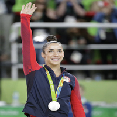
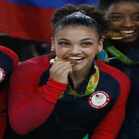

The Final Five
Why are they nicknamed "The Final Five"?
The nickname referred to the imminent retirement of Martha Karolyi, the legendary Romanian coach who has been the national team coordinator of the U.S. women's gymnastics program for the last 15 years. See more details here!
Simone Biles
Simone Biles was born on March 14, 1997 in Columbus, Ohio. She was raised by her grandparents, Nellie and Ron Biles. Simone has a younger sister as well, Adria Biles, who is also an avid gymnast. Like many gymnasts, Simone began training at a young age and began competing level 8 gymnastcs in 2007. 6 years later, in 2013 she made her first big senior-elite level showing at the U.S. P&G Championships where she won the All-Around event. This was also a historical moment as well because she was the first African-American woman to win P&G All-Around gold. Over the next couple years she went on to win a number of medals and All-Around titles at competitions all over the world. In 2015, Simone was the first ever gymnast to win three straight World All-Around titles. In July 2016 Simone was an obvious first choice for the Rio Olympic team and led her country to victory with her All-Around, Floor, and Vault gold medals. Simone has a total of 19 World and Olympic medals and is now known as the Greatest Gymnast of All Time.
Aly Raisman

Aly was born on May 25, 1994 and started gymnastics at the early age of two years old. At the age of 10, she started working with Mihai and Sylvia Brestyan at their American Gymnastics Club in Burlington, Massachusetts. Aly started competing at an elite level at 14 years old and quickly made a name for herself. In 2010 Aly heald an important role on the silver medal winning American team at the World Championships while also picking up three of her own bronze medals and the Visa National Championships that year. In 2012 Aly made the Olympic team and was able to help the 2012 team by winning bronze on Balance Beam and gold on Floor. She then took a break and competed on Dancing With the Stars in 2013. Over the next two years she worked on getting back into gymnastic shape to compete for the World and (hopefully) Olympic Games. ALl that work paid off and she was named to the Rio 2016 Olympic team and has never felt better. She helped the 2016 Olympic team solidify a gold medal in the All-Around Team event along with an individual silver in the All-Around (behind Simone Biles) and a Silver medal on Floor.
Gabby Douglas
Gabby Douglas was born on December 31, 1995 in Virginia Beach, Virginia. She began training at 6 years old and quickly excelled at the sport. She moved away from her hometown in 2010 to pursue better training with Liang Chow, a world-renowned gymnastics coach, and was able to make a name for herself on the World stage as the American Women won All-Around Team gold in 2011 at the World Artistic Gymnastic Championships in Tokyo. Her amazing power combined with her flexibility made her an unstoppable force. Gabby was eventually named to the 2012 Olympic Team to compete in London. She was the first African-American woman to win the individual All-Around gold and also a major contributor for the Team Event where her and 4 of her teammates won the All-Around Team Gold. Gabby returned to the competition floor in 2015 in hopes of making the 2016 Rio Olympic team. Although she did not have a great showing at the Olympic Trials in July 2016 she was still named as one of the top five for the Olympic team. She had a great showing at the 2016 Rio Olympics and helped the USA Women earn the gold medal in the All-Around Team event. Gabby placed 3rd out of 61 competitors but due to a new rule that only allows two women from each country to compete in the individual All-Around event, Gabby was cut short. She had a chance at an inidividual medal on the Uneven Bars event but made a small mistake that cost her to earn 7th place. She is now moving forward to being a judge for the Miss America Pageant as well as other entrepreneurial endeavors.
Laurie Hernandez

Laurie was born on June 9, 2000 in New Brunswick, New Jersey. She is the youngest of three children and also the youngest of the 2016 Olympic team members. Laurie started gymnastics at 6 years old and was quickly noticed by Maggie Haney, who would become her long time coach and manager. She attended many developmental camps but was sidelined in 2014 due to a dislocated right kneecap and fractured wrist. She came back a year later and competed in 4 competitions where she earned medals in every event and all-around gold. She was unfortunately to young in 2015 to be considered for the 2015 World Championship team. In 2016, Laurie made her debut as a Senior Elite level athlete earning the bronze all-around medal at the Jesolo, Italy competition. Laurie is one of only a few Latina athletes to represent Team USA and made quite a splash at the Rio 2016 Olympics. She was the youngest member on the team but delivered amazing performances to help seal All-Around gold in the Team event due to her routines on Vault, Balance Beam and Floor Exercise. Laurie's floor exercise became viral because to her charismatic personality and dance moves and is nicknamed "The Human Emoji". Following her Olympic success in Rio, Laurie was chosen to be a part of the Season 23 Dancing With the Stars cast.
Madison Kocian
Madison was born on June 15, 1997 in Dallas, Texas. She is the oldest of two children and began her gymnastic career at the age of 6. She was enrolled at the World Olympic Gymnastics Academy (WOGA) in Plano, Texas, where many succesful gymnasts have grown and trained for most of their life. Madison quickly grew as a competitive gymnast but particularly excelled in the Uneven Bars. She was named to the Junior US National Team in 2012 but ended up breaking her wrist, causing her to take some time off and heal. Madison rallied back in 2013 ultimately making the 2013 Senior National Team and competed in the 2014 World Championships. However Madison came up short behind Simone Biles, Kyla Ross, and Mykayla Skinner. Madison again competed in the 2015 World Championships in Scotland where she recieved an unprecedented four-way tie for the individual gold on Uneven Bars. Madison also helped Team USA to an All-Around Team gold. In July of 2016 Madison was named to the Rio 2016 Olympic team and helped the team win All-Around gold with an impressive score on Uneven bars. Madison went on to win an individual silver medal on Uneven Bars behind the Russian gymnast, Aliya Mustafina.